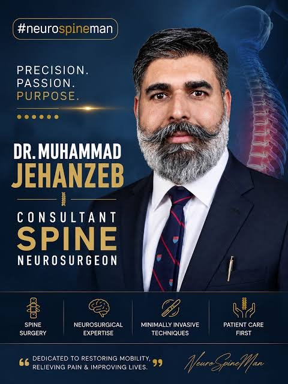

MBBS (IMDC), MS Neurosurgery (UHS) | Fellowship in Complex Spine Surgery (Germany) | EUROSPINE Diploma (EDISC)
Consultant Neurospine Surgeon | Punjab Institute of Neurosciences (PINS) & Lahore General Hospital (LGH)

I am a dedicated and highly skilled Consultant Neurosurgeon and Spine Surgeon with over a decade of experience in the medical field, specializing in minimally invasive spine surgeries. My journey began with an MBBS degree from Islamabad Medical and Dental College (Graduated with Distinction), followed by rigorous training in neurosurgery at LGH and PINS, and specialized fellowship training in Complex Spine Surgery in Germany (SRH Klinikum Karlsbad-Langensteinbach).
Current Practice: Consultant Neurosurgeon at Rasheed Hospital (DHA Phase 1, Lahore) and Punjab Institute of Neurosciences (PINS / LGH, Lahore).
International Training: Visiting Fellow in Complex Spine Surgery at SRH Klinikum Karlsbad-Langensteinbach, Germany.
Primary Institutions: Punjab Institute of Neurosciences (PINS) & Rasheed Hospital DHA Phase 1, Lahore.
For consultations, checkups, and appointments, you can reach out via official hospital channels or call directly.
Call for Appointment: 0334-8511495Stay updated with medical insights, health tips, and educational content on spine health shared across official platforms: